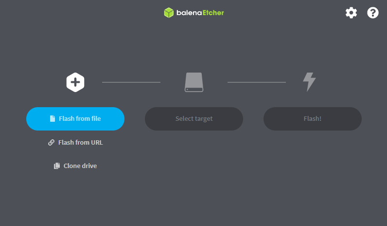
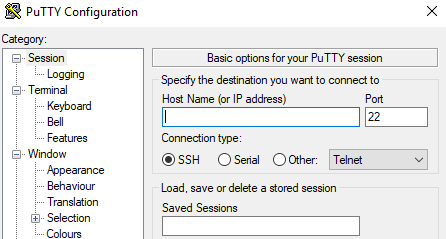

I have been tinkering with orange pi and notice that there only a hand full of tutorials about it, most of them are out dated compared to raspberry pi that dominated the playground with a ton of tutorials, this just shows how popular raspberry pi on the market and how large community has become. Orange pi on the other hand has a small community and just a few tutorials on it so the aim for this blog post is to introduce you to the world SoC (System on Chip) boards.
Orange pi one
SDcard Reader
Memory card 8GB(or higher)
5volts and 2 Amp Power Supply
Ethernet cable
and lastly laptop or PC
Before power up our opi we need os installed on the memory card so the system can boot from there. Insert your memory card into the card reader and the plugin the card reader to the pc. Format to sdcard using sd card formatter you can just format it normaly or use a formatting software like SD card formatter. after the memory card has been formatted open Balena eatcher click "Flash from file" and locate the os image you have downloaded then select your target memory to flash which is your sdcard select your storage device and then click select and then click flash.
Before pluging the power, insert the memory card into the Opi and make sure the ethernet cable is connected from your router/modem port into your Orange Pi
If all goes according to plan you should be able to connect by a ssh and to do that install Putty, once installed open you should know the ip address assigned by the router to your orange pi
Ip address in computing is like name of a person, the only difference is that each device needs to have unique address inside a network to avoid conflict with the other device. To know the IP address(name) of out orange pi device we need to login to our routers portal and there we can see the list of all connected device through a LAN connection. Look on the hostname column and locate the the name orangepi you should see the IPaddress: 192.168.123.4.
Now that we know the name of our Orange pi device we can now talk to it using Putty. Open the putty application and copy and paste the ip address under the Host name or IP address box like shown in below image and click open on the righthand corner.
When logging in for the first promt will pop-up with a warning just click accept and you should be greated with a ternal window like below.
Follow the instructions on creating root password and your user And there you have it!
I will also be posting about initial setup your Opi And
costomize the terminal etc.